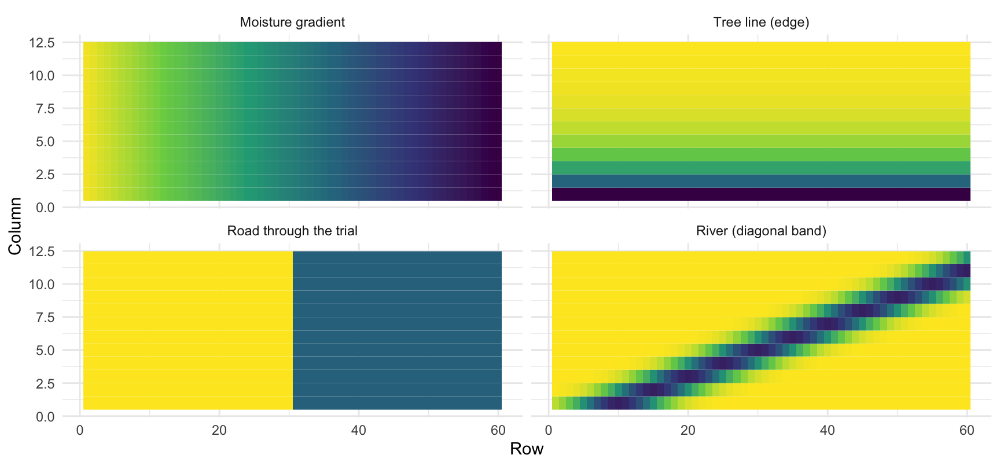
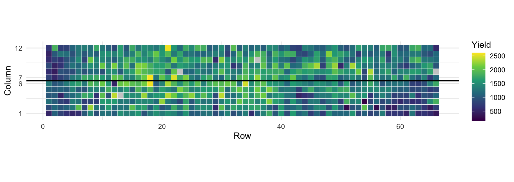
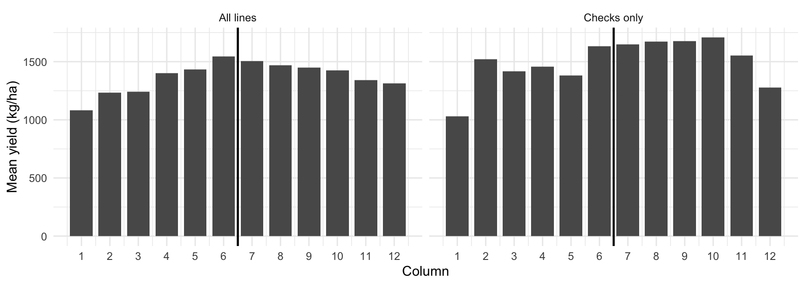
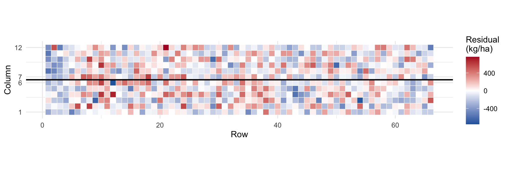
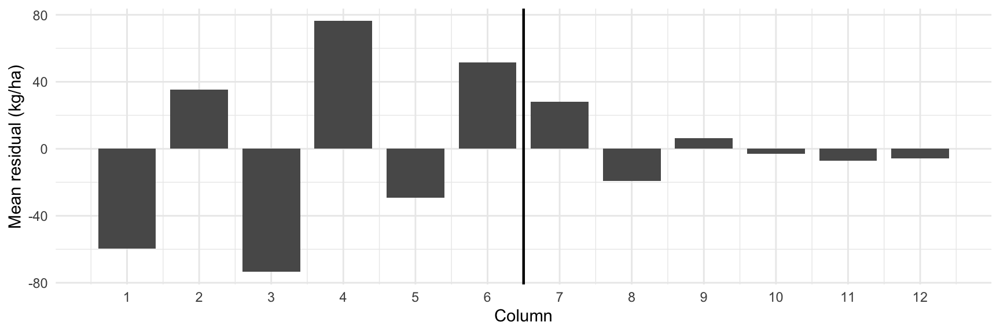
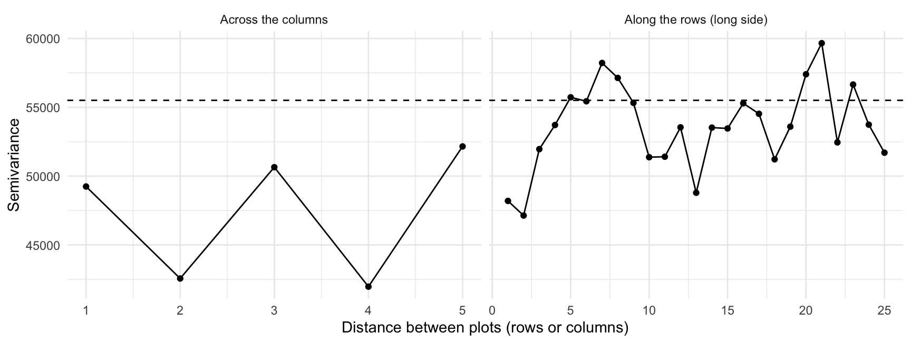
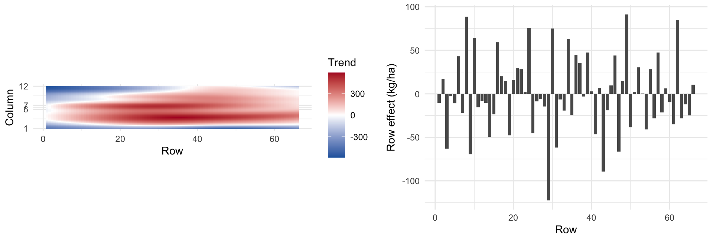
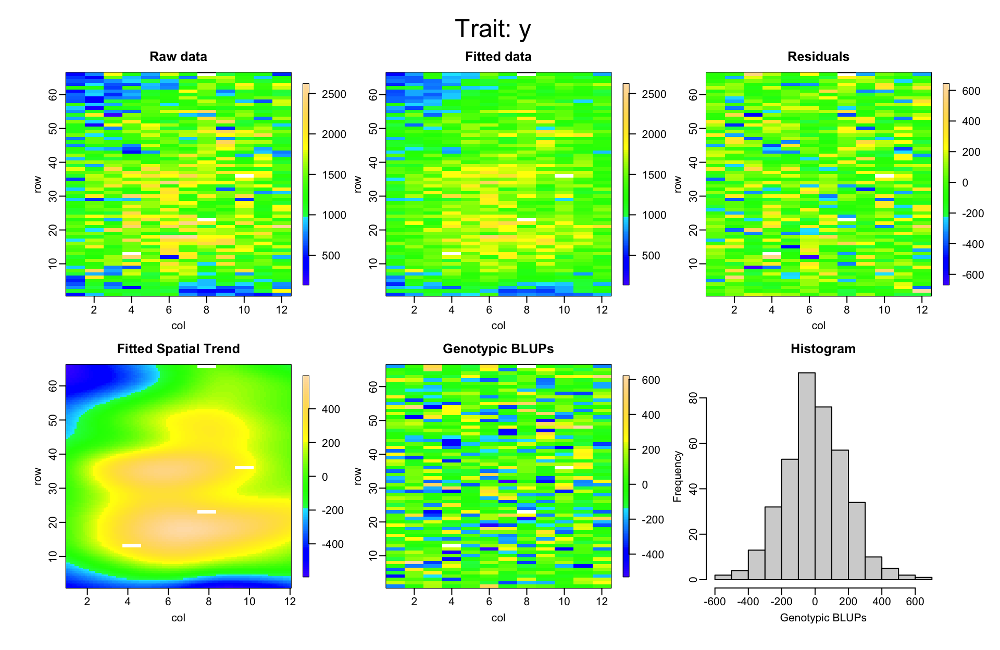
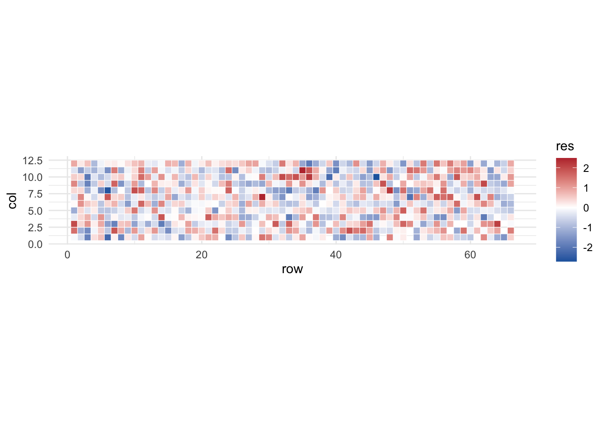

library(dplyr)
library(tidyr)
library(readr)
library(ggplot2)
library(lme4)
library(SpATS)9 Spatial Analysis and Trial Precision
Author: Luis Fernando Delgado Muñoz
Session: Day 4, Thursday 12 November (morning)
Materials of this session
Open the slides
Practical folder in R (ZIP)
Tutorial: spatial analysis with Mr.Bean
9.1 Learning objectives
- Recognize field heterogeneity and explain how it distorts the ranking of lines
- Diagnose spatial patterns with residual maps and variograms
- Fit a spatial model with
SpATS(2D P-splines) and read its outputs - Quantify the gain of the spatial correction and decide when it is justified
- Decide what to fix with the design and what to fix with the analysis
- Run a complete single-trial analysis, from the raw file to a table ready for selection
Chapter 7 removed the variation among incomplete blocks from the comparison of lines. But a block is only a rough way of saying “these plots are close to each other”. The soil, the water and the light change gradually across a field, and a block of 22 plots can hide a lot of that change. This chapter models the position of the plots directly.
We continue with the bean trial of Chapter 7 and Chapter 8, so every result can be compared with what we already know.
NotePackages
SpATS is part of the course installation (R/install_packages.R). The chapter uses nothing else.
9.2 Why the position of a plot matters
Every trial is laid out on land that is not uniform. Typical sources of heterogeneity are a line of trees or a road along one side of the field, a trial split by a road or a canal, a river or a drainage line crossing the field, and a slope that makes the top drier than the bottom. The figure shows four illustrative yield surfaces (they are schematic, not data) that a breeder could meet in practice.
g <- expand.grid(row = 1:60, col = 1:12)
g$`Moisture gradient` <- -0.8 * g$row / 60 * 10
g$`Tree line (edge)` <- -8 * exp(-(g$col - 1) / 2)
g$`Road through the trial` <- ifelse(g$row > 30, -5, 0)
g$`River (diagonal band)` <- -7 * exp(-((g$row - 5 * g$col - 5) / 6)^2)
pivot_longer(g, 3:6, names_to = "source", values_to = "effect") |>
mutate(source = factor(source, levels = names(g)[3:6])) |>
ggplot(aes(row, col, fill = effect)) +
geom_tile() +
facet_wrap(~ source, ncol = 2) +
scale_fill_viridis_c(guide = "none") +
labs(x = "Row", y = "Column") +
theme_minimal(base_size = 11)
The effect on selection is simple. A line that is sown in a good patch looks better than it is; a line in a poor patch looks worse. The environmental effect is added to the genetic effect, and the ranking mixes the two. Blocks and replicates cut the field into pieces and remove the average difference among pieces, but the variation inside a block is still in the residual.
9.3 The bean trial as a map
The bean trial has a row and a column for each plot (see Chapter 4). It is a long, narrow field: 66 rows and 12 columns. The first six columns are replicate 1 and the last six are replicate 2, and each incomplete block covers 11 consecutive rows and 2 columns.
beans <- read_csv("data/Example_Beans.csv", show_col_types = FALSE) |>
mutate(rep = factor(rep),
line = factor(line),
rb = factor(paste(rep, block, sep = ":")), # block inside replicate
rowf = factor(row), # row and column as factors
colf = factor(col),
yield = YdHa_clean)
c(plots = nrow(beans), rows = max(beans$row), columns = max(beans$col),
missing_yield = sum(is.na(beans$yield))) plots rows columns missing_yield
792 66 12 4 Before any model, look at the raw yield on the map. This is the first diagnostic and it costs one line.
ggplot(beans, aes(row, col, fill = yield)) +
geom_tile(colour = "white", linewidth = 0.2) +
geom_hline(yintercept = 6.5, linewidth = 0.8) +
scale_fill_viridis_c(na.value = "grey80") +
scale_y_continuous(breaks = c(1, 6, 7, 12)) +
coord_equal() +
labs(x = "Row", y = "Column", fill = "Yield") +
theme_minimal(base_size = 11)
A map of raw yield mixes genetic and environmental effects, so we look at it with care. Still, the lines were randomized, so the average of a whole column (66 plots of different lines) should be the same everywhere unless the environment changes. And the 16 checks, which are the same lines in every column, give a second reading.
check_lines <- beans |> filter(!is.na(yield)) |> count(line) |> filter(n > 2) |> pull(line)
profile <- bind_rows(
beans |> filter(!is.na(yield)) |> group_by(col) |>
summarise(yield = mean(yield), .groups = "drop") |> mutate(set = "All lines"),
beans |> filter(!is.na(yield), line %in% check_lines) |> group_by(col) |>
summarise(yield = mean(yield), .groups = "drop") |> mutate(set = "Checks only")
)
ggplot(profile, aes(col, yield)) +
geom_col(width = 0.8) +
geom_vline(xintercept = 6.5, linewidth = 0.8) +
scale_x_continuous(breaks = 1:12) +
facet_wrap(~ set) +
labs(x = "Column", y = "Mean yield (kg/ha)") +
theme_minimal(base_size = 11)
The mean yield rises from 1,082 kg/ha in column 1 to 1,545 in column 6, and falls to 1,315 in column 12. That is a difference of about 463 kg/ha across the width of the field, twice the genetic standard deviation of the lines (about 220 kg/ha, Chapter 7), and it cannot be genetic because the lines are randomized. The checks show the same pattern, with 1,031 kg/ha in column 1 against 1,667 as the mean of columns 6 to 10 (each column has only 4 to 10 plots of checks, so this is a rough reading).
This is a typical edge-to-centre gradient, like the tree line of Figure 9.1: the outer columns of the trial yield less. Replicates are side by side, so each replicate sees a rising gradient (replicate 1) or a falling one (replicate 2). Next we ask whether the Day 3 model has already absorbed it.
9.4 Looking for spatial patterns
We start from the model of Chapter 7: replicate fixed, lines and incomplete blocks random.
m_block <- lmer(yield ~ rep + (1 | line) + (1 | rb), data = beans)
VarCorr(m_block) Groups Name Std.Dev.
line (Intercept) 220.82
rb (Intercept) 216.66
Residual 281.91 resid_df <- beans |> filter(!is.na(yield)) |> mutate(res = resid(m_block))9.4.1 Residual map
If the model has captured all the structure of the field, the residuals look like random noise on the map. If not, we see patches or bands of the same sign.
ggplot(resid_df, aes(row, col, fill = res)) +
geom_tile(colour = "white", linewidth = 0.2) +
geom_hline(yintercept = 6.5, linewidth = 0.8) +
scale_fill_gradient2(low = "#2166ac", mid = "white", high = "#b2182b", midpoint = 0) +
scale_y_continuous(breaks = c(1, 6, 7, 12)) +
coord_equal() +
labs(x = "Row", y = "Column", fill = "Residual\n(kg/ha)") +
theme_minimal(base_size = 11)
The map is not pure noise: there are more red plots near columns 6 and 7 (the boundary between the replicates) and more blue plots in columns 1 and 3. The blocks (3 per replicate, each 2 columns wide) took away most of the gradient, but not all of it. The mean residual of each column shows what is left:
col_res <- resid_df |> group_by(col) |> summarise(res = mean(res), .groups = "drop")
ggplot(col_res, aes(col, res)) +
geom_col(width = 0.8) +
geom_vline(xintercept = 6.5, linewidth = 0.8) +
scale_x_continuous(breaks = 1:12) +
labs(x = "Column", y = "Mean residual (kg/ha)") +
theme_minimal(base_size = 11)
Inside every block of replicate 1 the gradient is still there: the residual rises from -60 to 35 kg/ha (columns 1 and 2), from -74 to 76 (columns 3 and 4) and from -29 to 52 (columns 5 and 6). A block of two columns cannot remove a gradient that runs across those two columns.
9.4.2 Variogram
The eye can be fooled, so we also measure. The semivariogram compares the residuals of two plots as a function of the distance between them. If plots that are close are more alike than plots that are far, the semivariance increases with distance. If the residuals are independent it is flat.
semivariogram <- function(d, direction = c("row", "col"), max_lag = 25) {
direction <- match.arg(direction)
same <- if (direction == "row") outer(d$col, d$col, "==") # same column
else outer(d$row, d$row, "==") & outer(d$rep, d$rep, "==") # same row and replicate
lag <- if (direction == "row") abs(outer(d$row, d$row, "-"))
else abs(outer(d$col, d$col, "-"))
half <- 0.5 * outer(d$res, d$res, "-")^2
keep <- same & lag > 0 & lag <= max_lag & upper.tri(same)
tibble(lag = lag[keep], gamma = half[keep]) |>
group_by(lag) |> summarise(gamma = mean(gamma), pairs = n(), .groups = "drop")
}
vg <- bind_rows(
mutate(semivariogram(resid_df, "row"), direction = "Along the rows (long side)"),
mutate(semivariogram(resid_df, "col", max_lag = 5), direction = "Across the columns")
)ggplot(vg, aes(lag, gamma)) +
geom_hline(yintercept = var(resid_df$res), linetype = 2) +
geom_point() + geom_line() +
facet_wrap(~ direction, scales = "free_x") +
labs(x = "Distance between plots (rows or columns)", y = "Semivariance") +
theme_minimal(base_size = 11)
Along the rows the semivariance is 48,200 at distance 1 and reaches about 56,370 (the average of distances 5 to 9), close to the variance of the residuals, 55,507. The residuals of plots that are 1 or 2 rows apart are a little more alike than those of distant plots. The effect is weak: this trial has no strong local correlation along the rows, and the main spatial feature is the gradient across the columns that we saw in the maps. Across the columns there are only 5 possible distances, so that panel tells us little. The variogram is one piece of evidence, not a verdict.
ImportantWhen is a spatial correction justified?
Use the spatial model when at least two of these are true:
- The residual map shows patches or bands.
- The semivariogram increases with distance instead of being flat.
- Row or column effects are large (their variance is a sizeable part of the genetic variance).
- The spatial model improves the fit (AIC) or the heritability by a useful amount in the comparison of the last section.
If the residuals look random, the extra model buys nothing and costs complexity.
9.5 Spatial models with 2D P-splines
Many spatial models exist. The oldest add row and column effects, or an autoregressive correlation between neighbouring plots (AR1 x AR1; Gilmour et al. 1997, Cullis et al. 2006). The model of the SpATS package (Rodríguez-Álvarez et al. 2018) takes another route: it describes the field as a smooth surface of rows and columns, fitted with penalized splines (P-splines). It has been used for sorghum, wheat and maize trials, among others (for example Velazco et al. 2017). The idea in three sentences:
- A spline is a flexible curve made of small pieces joined smoothly. The 2D version is a flexible surface.
- The penalty keeps the surface smooth: it can follow a gradient or a patch, but not the noise of a single plot.
- The model decides how smooth the surface should be from the data, so we do not choose a correlation structure by hand.
The surface is added to the usual mixed model, together with random row and column effects (for example for sowing or harvest direction) and the blocks of the design:
fit_spats <- function(data, trait = "yield", genotype_random = TRUE,
nseg = c(6, 32), random = ~ rowf + colf + rb) {
d <- data
d$y <- d[[trait]]
SpATS(response = "y", genotype = "line", genotype.as.random = genotype_random,
spatial = ~ PSANOVA(col, row, nseg = nseg, nest.div = 2),
fixed = ~ rep, random = random, data = d,
control = list(tolerance = 1e-03, monitoring = 0))
}
m_sp <- fit_spats(beans)What each argument says:
| Argument | Meaning in the bean trial |
|---|---|
response |
the trait, one column of the data |
genotype, genotype.as.random |
the lines; random gives BLUPs, fixed gives BLUEs |
spatial = ~ PSANOVA(col, row, nseg) |
the 2D P-spline surface over the column and row coordinates |
nseg |
number of spline segments in each direction (columns, rows). A good start is about half of the number of columns and rows: 6 and 32 here. Each must be a multiple of nest.div (2 by default) |
fixed |
fixed effects: the replicate |
random |
random effects: row, column and incomplete block (rowf, colf, rb, factors) |
WarningRow and column must be numbers, and also factors
col and row (numeric) go inside PSANOVA(), because the surface needs the distance between plots. The factors rowf and colf go in random, to give each row and column its own effect. We create both versions from the same columns.
9.5.1 Reading the output
The print of the model shows the effective dimension of each term: how many parameters it effectively uses.
m_sp
Spatial analysis of trials with splines
Response: y
Genotypes (as random): line
Spatial: ~PSANOVA(col, row, nseg = nseg, nest.div = 2)
Fixed: ~rep
Random: ~rowf + colf + rb
Number of observations: 788
Number of missing data: 4
Effective dimension: 303.27
Deviance: 9835.638The effective dimension of the lines is 244 out of 380. The smooth surface uses about 26 effective parameters, the rows 24.5 (out of 66), the columns 2.1 (out of 12) and the incomplete blocks only 1.4 (out of 36): once the surface is in the model, the blocks have little left to explain.
The estimated surface and the row effects show what was removed from the plots. The surface (left) recovers the gradient across the field: high yield in the middle, low yield in the outer columns, with a range of several hundred kg/ha. The row effects (right) are small by comparison, mostly under 100 kg/ha.
tr <- obtain.spatialtrend(m_sp)
trend <- expand.grid(col = tr$col.p, row = tr$row.p) |>
mutate(trend = as.vector(tr$fit))
p1 <- ggplot(trend, aes(row, col, fill = trend)) +
geom_raster() +
scale_fill_gradient2(low = "#2166ac", mid = "white", high = "#b2182b", midpoint = 0) +
scale_y_continuous(breaks = c(1, 6, 7, 12)) +
coord_equal() +
labs(x = "Row", y = "Column", fill = "Trend") +
theme_minimal(base_size = 11)
row_eff <- tibble(row = 1:66, effect = m_sp$coeff[paste0("rowf", 1:66)])
p2 <- ggplot(row_eff, aes(row, effect)) +
geom_col(width = 0.8) +
labs(x = "Row", y = "Row effect (kg/ha)") +
theme_minimal(base_size = 11)
cowplot::plot_grid(p1, p2, nrow = 1, rel_widths = c(1.15, 1))
SpATS also has its own panel with the raw data, the fitted values, the residuals, the spatial trend and the genotype predictions:
plot(m_sp, all.in.one = TRUE)
9.5.2 BLUEs and BLUPs
predict() returns the genotype means with their standard errors, as in Chapter 7. With genotype.as.random = FALSE the lines are fixed and we get BLUEs; with TRUE we get BLUPs.
blup_sp <- predict(m_sp, which = "line") |>
select(line, BLUP = predicted.values, SE = standard.errors) |>
mutate(BLUP = BLUP + m_sp$coeff[["repR2"]] / 2) # centre on the mean of the two replicates
m_sp_fix <- fit_spats(beans, genotype_random = FALSE)
blue_sp <- predict(m_sp_fix, which = "line") |>
select(line, BLUE = predicted.values, SE_BLUE = standard.errors) |>
mutate(BLUE = BLUE + m_sp_fix$coeff[["repR2"]] / 2)
head(left_join(blue_sp, blup_sp, by = "line") |> arrange(desc(BLUP)), 5) line BLUE SE_BLUE BLUP SE
1 SEF_060 2242.021 180.1600 1871.757 143.9013
2 DOR_364 2114.316 181.6090 1809.103 144.3952
3 DAB_366 2036.997 178.3529 1770.903 142.6014
4 TIO_CANELA_75 1898.100 133.8103 1744.753 116.0499
5 SEN_056 1954.716 180.5070 1714.841 143.2401As in Chapter 7, BLUEs are the input for a later stage (for example a multi-environment analysis, Chapter 11), and BLUPs are the best predictors for ranking within this trial.
9.6 Mr.Bean: spatial analysis without code
Mr.Bean is a free Shiny application developed at the Alliance of Bioversity International and CIAT (Aparicio et al. 2024). It has a module that fits the SpATS model of this chapter, so a breeder who does not write R can obtain the same BLUEs, BLUPs and heritability. The workflow is the same as in R:
- Import the trial file. The beans file
Example_Beans.csvis ready to use: it has one row per plot, with the line, the replicate, the block, the row, the column and the traits. - Tell the app which column is which: the genotype, the row and the column, the replicate and the block, and the trait to analyse.
- Choose the model: spatial correction (SpATS) or the models without space for classical designs, and whether genotypes are fixed or random.
- Run, inspect and download: the app shows the heritability, the variance components, the spatial trend and the residuals, and exports the BLUEs or BLUPs as a table.
NoteRunning the app
Two ways to open it, described by the authors at https://apariciojohan.github.io/MrBeanApp/: use the web version hosted on shinyapps.io (it needs an internet connection and may be slow with many users), or install it in R with remotes::install_github("AparicioJohan/MrBeanApp") and start it with library(MrBean) followed by run_app(). It is not part of the course packages. We will use it in the practical session to check that the app and the code give the same numbers.
Mr.Bean is a good way to share an analysis with colleagues who do not use R, and a good check of your own code. The limits are the usual ones of a point-and-click tool: the analysis is not stored as a script that you can rerun on the next trial.
9.7 Spatial against non-spatial
Is the spatial model better? We compare four ways of analysing the same trial, from the simplest to the most complete. All are fitted with the lines as random effects.
# generalized heritability (Cullis) from the mixed model equations, as in the heritability section of the mixed models chapter
h2_cullis <- function(model, genotype) {
X <- getME(model, "X"); Z <- getME(model, "Z"); s2 <- sigma(model)^2
vc <- as.data.frame(VarCorr(model)); fl <- getME(model, "flist"); Gp <- getME(model, "Gp")
v <- unlist(lapply(names(fl), function(g) rep(vc$vcov[vc$grp == g], nlevels(fl[[g]]))))
W <- cbind(X, Z); C <- crossprod(W) / s2; idx <- ncol(X) + seq_along(v)
C[cbind(idx, idx)] <- C[cbind(idx, idx)] + 1 / v
Cinv <- solve(as.matrix(C)); k <- match(genotype, names(fl))
gi <- ncol(X) + (Gp[k] + 1):Gp[k + 1]; P <- Cinv[gi, gi]; n <- nrow(P)
vdiff <- 2 * (n * sum(diag(P)) - sum(P)) / (n * (n - 1))
1 - vdiff / (2 * vc$vcov[vc$grp == genotype])
}m_rowcol <- lmer(yield ~ rep + (1 | line) + (1 | rb) + (1 | rowf) + (1 | colf), data = beans)
m_rc_only <- lmer(yield ~ rep + (1 | line) + (1 | rowf) + (1 | colf), data = beans)
n_lines <- nlevels(beans$line)
comp <- tibble(
Model = c("Incomplete blocks (Day 3)", "Blocks + rows + columns",
"Rows + columns, no blocks", "SpATS (surface + rows + columns + blocks)"),
`Residual SD` = c(sigma(m_block), sigma(m_rowcol), sigma(m_rc_only), sqrt(m_sp$psi[1])),
`Heritability` = c(h2_cullis(m_block, "line"), h2_cullis(m_rowcol, "line"),
h2_cullis(m_rc_only, "line"),
m_sp$eff.dim[["line"]] / (n_lines - 1)),
AIC = c(AIC(m_block), AIC(m_rowcol), AIC(m_rc_only), NA)
)
comp |> mutate(across(where(is.numeric), \(x) round(x, 2)))# A tibble: 4 × 4
Model `Residual SD` Heritability AIC
<chr> <dbl> <dbl> <dbl>
1 Incomplete blocks (Day 3) 282. 0.54 11510.
2 Blocks + rows + columns 241. 0.6 11438.
3 Rows + columns, no blocks 251. 0.59 11465.
4 SpATS (surface + rows + columns + blocks) 231. 0.64 NA How to read the columns:
- Residual SD is the unexplained plot-to-plot variation. A smaller value means that the model took more structure out of the field.
- Heritability is the generalized (Cullis) heritability of Section 7.7 for the
lme4models. For SpATS it is the effective dimension of the lines divided by their number minus one, which is the quantity thatgetHeritability()reports and is the same measure. - AIC compares models fitted by
lme4to the same data with the same fixed effects: the lower, the better. SpATS uses a different likelihood, so we do not compare its AIC with the others.
Adding the position of the plots lowers the residual SD from 282 to 231 kg/ha and raises the heritability of yield from 0.54 to 0.64. A simpler model with random rows and columns gets about half of that gain in heritability (0.6) and has the lowest AIC of the three lme4 models (11,438 against 11,510 for the Day 3 model).
9.7.1 Does the ranking change?
Heritability measures precision, but the breeder cares about the selection. We compare the Day 3 BLUPs with the SpATS BLUPs.
rank_cmp <- bind_cols(
tibble(line = rownames(ranef(m_block)$line), BLUP_block = ranef(m_block)$line[, 1]),
BLUP_spats = blup_sp$BLUP[match(rownames(ranef(m_block)$line), blup_sp$line)] - mean(blup_sp$BLUP)
)
k <- round(0.10 * nrow(rank_cmp)) # the best 10% of the lines
top <- \(x) rank_cmp$line[order(-x)][1:k]
c(pearson = cor(rank_cmp$BLUP_block, rank_cmp$BLUP_spats),
spearman = cor(rank_cmp$BLUP_block, rank_cmp$BLUP_spats, method = "spearman"),
selected = k,
in_both = length(intersect(top(rank_cmp$BLUP_block), top(rank_cmp$BLUP_spats)))) pearson spearman selected in_both
0.9433450 0.9315086 38.0000000 30.0000000 The rankings are similar (correlation above 0.9), but not the same. Of the 38 lines selected with the Day 3 model, 30 are also selected by the spatial model; the other 8 are different lines. Which list is better?
9.7.2 A check with the other replicate
We cannot know the true genetic value, but we can ask a fair question: which model predicts better the performance of a line in a replicate it has never seen? The two replicates are in different columns, so they are independent samples of the field. We fit each model with replicate 1 only and compare its predictions with the raw means of replicate 2, and then the other way round.
check_one <- function(train, test) {
train <- droplevels(train)
truth <- tapply(test$yield, test$line, mean, na.rm = TRUE)
# raw means of the training replicate
raw <- tapply(train$yield, train$line, mean, na.rm = TRUE)
# incomplete-block model
m1 <- lmer(yield ~ (1 | line) + (1 | rb), data = train)
b1 <- setNames(ranef(m1)$line[, 1], rownames(ranef(m1)$line))
# rows and columns
m2 <- lmer(yield ~ (1 | line) + (1 | rb) + (1 | rowf) + (1 | colf), data = train)
b2 <- setNames(ranef(m2)$line[, 1], rownames(ranef(m2)$line))
# SpATS (a single replicate has 6 columns)
m3 <- SpATS(response = "yield", genotype = "line", genotype.as.random = TRUE,
spatial = ~ PSANOVA(col, row, nseg = c(4, 32), nest.div = 2),
random = ~ rowf + colf + rb, data = train,
control = list(tolerance = 1e-03, monitoring = 0))
p3 <- predict(m3, which = "line")
b3 <- setNames(p3$predicted.values, p3$line)
common <- Reduce(intersect, list(names(truth), names(raw), names(b1), names(b2), names(b3)))
ok <- common[!is.na(truth[common])]
k <- round(0.10 * length(ok))
out <- sapply(list(`Raw means` = raw, `Incomplete blocks` = b1,
`Blocks + rows + columns` = b2, SpATS = b3), function(s)
c(correlation = cor(s[ok], truth[ok]),
top10_yield = mean(truth[ok][order(-s[ok])][1:k])))
as.data.frame(t(out)) |> tibble::rownames_to_column("Model")
}
r1 <- filter(beans, rep == "R1"); r2 <- filter(beans, rep == "R2")
cv <- bind_rows(mutate(check_one(r1, r2), from = "R1 to R2"),
mutate(check_one(r2, r1), from = "R2 to R1")) |>
group_by(Model) |>
summarise(`Correlation with the other replicate` = mean(correlation),
`Yield of the best 10% in the other replicate` = mean(top10_yield),
.groups = "drop")
cv <- cv |> arrange(desc(`Correlation with the other replicate`))
cv |> mutate(across(where(is.numeric), \(x) round(x, 3)))# A tibble: 4 × 3
Model Correlation with the other re…¹ Yield of the best 10…²
<chr> <dbl> <dbl>
1 SpATS 0.367 1608.
2 Blocks + rows + columns 0.36 1635.
3 Incomplete blocks 0.337 1626.
4 Raw means 0.288 1591.
# ℹ abbreviated names: ¹`Correlation with the other replicate`,
# ²`Yield of the best 10% in the other replicate`The correlation with the other replicate is 0.29 for the raw means, 0.34 for the incomplete-block model and 0.37 for SpATS. Adjusting for the field clearly beats the raw means, and the spatial model is slightly better than the blocks alone. The yield of the best 10% in the other replicate does not follow the same order (from 1,591 to 1,635 kg/ha), because it depends on only 38 lines. With two replicates the replicate used as “truth” is itself noisy, so we should not over-read small differences among the adjusted models.
ImportantWhat the comparison tells us
The spatial model raises the precision of the trial (smaller residual, higher heritability) and changes some selections. The check with the other replicate shows that the predictions are better than with raw means and slightly better than with the blocks alone. The cost is the time to fit and check it. For yield, which is sensitive to the field, it is worth it; the next sections show a trait where it is not.
9.8 Design or analysis?
Statistical correction is a rescue, not a plan. The cheapest way to have a precise trial is to design it well, and the two work together.
| Problem | Fix with the design | Fix with the analysis |
|---|---|---|
| Known gradient (slope, edge) | Orient blocks across the gradient; put replicates side by side | Row or column effects, or the SpATS surface |
| Unknown patches | Small incomplete blocks; row-column designs (Chapter 5) | Spatial model; check residual map |
| Border competition | Border plots; plot size that avoids edge effect | Do not analyse border plots as data |
| Unreplicated or p-rep lines | Replicated checks spread over the field | Model with checks as a reference; spatial surface |
| Lost plots | Extra seed and reserve plots | Mixed model (it handles missing plots) |
| Large plot-to-plot noise | Larger plots, more replicates | Not recoverable by analysis |
In the bean trial the gradient runs across the width of the field, from the outer columns to the middle. The incomplete blocks, 11 rows long and 2 columns wide, cut that gradient into three strips per replicate, and that is why the block variance is as large as the genetic variance. But each block still contains two columns with different yield levels. Blocks that are one column wide and 22 rows long would follow the contours of the gradient and be more uniform inside. Border plots in the outer columns (the lowest yield, columns 1 and 12) would remove the edge effect from the lines under evaluation. Both are design decisions that cost less than the analysis that now has to repair them.
A good rule: design for the precision you need, analyse for the heterogeneity that remains. Plan the number of replicates and the spacing of the checks before the season, because no model gives back information that the trial did not collect.
9.9 A complete single-trial workflow
Everything in the course so far is now in one path: raw file, quality control (Chapter 4), design and model (Chapter 5, Chapter 7), estimates and selection (Chapter 8). We write it as a function that takes the trial and a trait, and returns a table ready for selection.
single_trial <- function(data, trait, spatial = TRUE) {
# 1. raw data and quality control: keep plots with a value; the outliers were handled in the QC chapter
d <- data |> mutate(y = .data[[trait]]) |> filter(!is.na(y)) |> droplevels()
# 2. model: spatial or incomplete blocks
if (spatial) {
m <- SpATS(response = "y", genotype = "line", genotype.as.random = TRUE,
spatial = ~ PSANOVA(col, row, nseg = c(6, 32), nest.div = 2),
fixed = ~ rep, random = ~ rowf + colf + rb, data = d,
control = list(tolerance = 1e-03, monitoring = 0))
p <- predict(m, which = "line")
sg <- m$var.comp[["line"]]
tab <- tibble(line = as.character(p$line),
BLUP = p$predicted.values + m$coeff[["repR2"]] / 2,
SE = p$standard.errors)
h2 <- m$eff.dim[["line"]] / (nlevels(d$line) - 1)
} else {
m <- lmer(y ~ rep + (1 | line) + (1 | rb), data = d)
sg <- as.data.frame(VarCorr(m))$vcov[1]
pv <- as.data.frame(ranef(m, condVar = TRUE))
tab <- tibble(line = as.character(pv$grp[pv$grpvar == "line"]),
BLUP = fixef(m)[1] + fixef(m)["repR2"] / 2 + pv$condval[pv$grpvar == "line"],
SE = pv$condsd[pv$grpvar == "line"])
h2 <- h2_cullis(m, "line")
}
# 3. selection-ready table: rank, reliability and a flag for the checks
n_pl <- count(d, line)
tab <- tab |>
mutate(reliability = 1 - SE^2 / sg,
rank = rank(-BLUP, ties.method = "first"),
check = line %in% n_pl$line[n_pl$n > 2]) |>
arrange(rank)
list(model = m, table = tab, h2 = h2)
}
res <- single_trial(beans, "yield")
round(res$h2, 3)[1] 0.644head(res$table, 8)# A tibble: 8 × 6
line BLUP SE reliability rank check
<chr> <dbl> <dbl> <dbl> <int> <lgl>
1 SEF_060 1872. 144. 0.610 1 FALSE
2 DOR_364 1809. 144. 0.607 2 FALSE
3 DAB_366 1771. 143. 0.617 3 FALSE
4 TIO_CANELA_75 1745. 116. 0.746 4 TRUE
5 SEN_056 1715. 143. 0.613 5 FALSE
6 DOR_390 1713. 145. 0.606 6 FALSE
7 DAB_577 1698. 144. 0.610 7 FALSE
8 AMADEUS 1672. 145. 0.606 8 FALSEThe table has what the breeder needs to decide: the BLUP, its standard error, the reliability of each line (how much we can trust its prediction, between 0 and 1) and a flag for the checks. A line with a high BLUP and low reliability is a candidate for retesting; one with a high BLUP and high reliability is a solid advance. The selection steps of Chapter 8 (expected gain, indices) start from this table.
# save the table for the next step (selection or the multi-environment analysis)
readr::write_csv(res$table, "resultados/yield_blups_spatial.csv")9.9.1 One function, five traits
Now the same function with all the traits, with and without the spatial correction. This is the answer to “when does it pay?”.
traits <- c(Yield = "yield", `Days to flowering` = "DF", `Days to maturity` = "DPM",
`Plant height` = "PLHA", `100-seed weight` = "SW100")
gain <- bind_rows(lapply(names(traits), function(nm) {
a <- single_trial(beans, traits[[nm]], spatial = FALSE)$h2
b <- single_trial(beans, traits[[nm]], spatial = TRUE)$h2
tibble(Trait = nm, `Incomplete blocks` = a, SpATS = b, Gain = b - a)
}))
gain |> mutate(across(where(is.numeric), \(x) round(x, 3)))# A tibble: 5 × 4
Trait `Incomplete blocks` SpATS Gain
<chr> <dbl> <dbl> <dbl>
1 Yield 0.542 0.644 0.102
2 Days to flowering 0.646 0.646 0
3 Days to maturity 0.644 0.653 0.01
4 Plant height 0.123 0.157 0.034
5 100-seed weight 0.86 0.868 0.008The gain is large for yield, the trait most affected by the soil and the water, and almost nothing for flowering, maturity and seed weight. Plant height has a very low heritability in both models and the correction does not rescue it. The spatial model is a tool for the traits that need it, not a default for all.
9.10 Exercise
Work with the same trial.
- Draw the residual map of days to maturity (DPM) from the incomplete-block model. Do you see bands or patches, as in Figure 9.4?
- Run
single_trial()for DPM with and without space. Is the correction justified by the rule of this chapter? - How many of the 38 best lines for yield (10%) by the spatial model are among the 38 best by the Day 3 model? Which is the first line that enters the list only with the spatial model?
TipSolution
# 1. residual map of DPM
dpm <- beans |> filter(!is.na(DPM)) |> mutate(res = resid(lmer(DPM ~ rep + (1 | line) + (1 | rb), data = pick(everything()))))
ggplot(dpm, aes(row, col, fill = res)) +
geom_tile(colour = "white", linewidth = 0.2) +
scale_fill_gradient2(low = "#2166ac", mid = "white", high = "#b2182b", midpoint = 0) +
coord_equal() + theme_minimal(base_size = 11)
# 2. with and without space
c(blocks = single_trial(beans, "DPM", spatial = FALSE)$h2,
spats = single_trial(beans, "DPM", spatial = TRUE)$h2) blocks spats
0.6435511 0.6530794 # 3. overlap for yield
a <- single_trial(beans, "yield", spatial = FALSE)$table
b <- single_trial(beans, "yield", spatial = TRUE)$table
k <- round(0.10 * nrow(a))
only_spatial <- setdiff(b$line[1:k], a$line[1:k])
c(shared = length(intersect(a$line[1:k], b$line[1:k])), selected = k) shared selected
30 38 only_spatial[1][1] "DAB_090"- The residual map of DPM looks like noise: there are no bands or patches.
- The heritability of DPM goes from 0.64 to 0.65, so the correction is not justified. The simpler model is enough.
- Thirty of the 38 lines are shared. The first line that enters the list only with the spatial model is DAB_090.
9.11 Key takeaways
- Plots that are close are more alike than plots that are far. Blocks capture part of this; the rest stays in the residual and mixes with the genetic signal.
- Look before you model: a map of the raw data, a map of the residuals and a semivariogram take minutes.
SpATSfits a smooth surface of rows and columns with P-splines, plus random row, column and block effects, and returns BLUEs, BLUPs and heritability. Mr.Bean gives the same analysis without code.- The gain depends on the trait: large for yield in this trial, nearly nothing for flowering, maturity and seed weight.
- A better ranking is not guaranteed by a more complex model. Check against an independent replicate and report the heritability of the model you use.
- Design first, analysis second. Orient blocks, replicate the checks and protect the borders; the model repairs what remains.
9.12 References
- Rodríguez-Álvarez MX, Boer MP, van Eeuwijk FA, Eilers PHC (2018). Correcting for spatial heterogeneity in plant breeding experiments with P-splines. Spatial Statistics 23: 52 to 71.
- Aparicio J, Gezan SA, Ariza-Suarez D, Raatz B, Diaz S, Heilman-Morales A, Lobaton J (2024). Mr.Bean: a comprehensive statistical and visualization application for modeling agricultural field trials data. Frontiers in Plant Science 14: 1290078.
- Cullis BR, Smith AB, Coombes NE (2006). On the design of early generation variety trials with correlated data. Journal of Agricultural, Biological, and Environmental Statistics 11: 381 to 393.
- Gilmour AR, Cullis BR, Verbyla AP (1997). Accounting for natural and extraneous variation in the analysis of field experiments. Journal of Agricultural, Biological, and Environmental Statistics 2: 269 to 293.
- Velazco JG, Rodríguez-Álvarez MX, Boer MP, Jordan DR, Eilers PHC, Malosetti M, van Eeuwijk FA (2017). Modelling spatial trends in sorghum breeding field trials using a two-dimensional P-spline mixed model. Theoretical and Applied Genetics 130: 1375 to 1392.